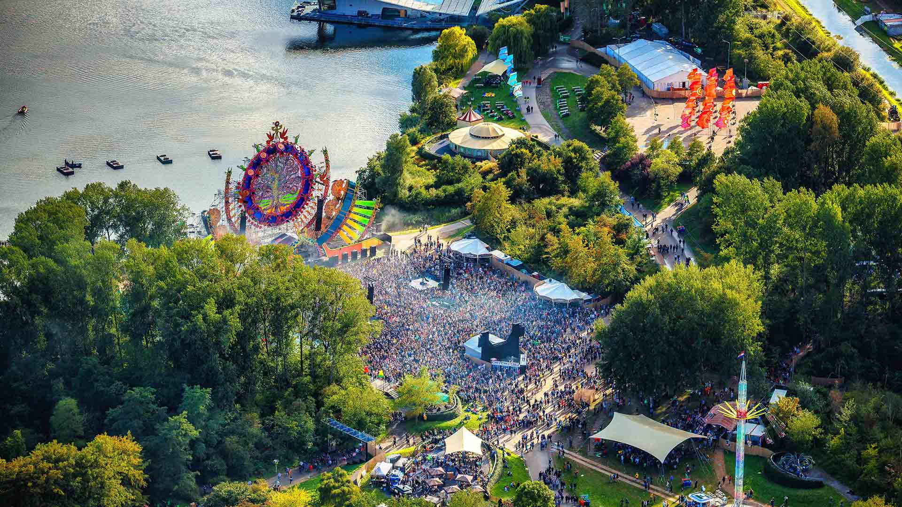

Hoofddorp is een redelijk groot dorp die op dit moment rond de 76000 inwoners telt. Hoofddorp heeft veel leuke dingen om je dagen bezig te kunnen houden, zo is er de Toolenburgerplas waar mensen vaak grote rondes met hun honden lopen en je met lekker weer kan zitten en nog een beetje een strandgevoel kan krijgen. Ook zijn er in Hoofddorp vaak nog evenementen en feesten die worden georganiseerd. Dat zijn bijvoorbeeld dingen als mud master waar een grote groep mensen gezamenlijk een modderige en zware hindernisbaan probeert te overwinnen of meerlive wat een wat kleinschaliger feest is in het centrum van hoofddorp, maar de grootste van allen blijft toch Mysteryland.
